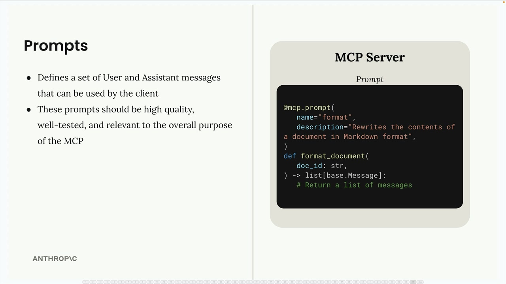
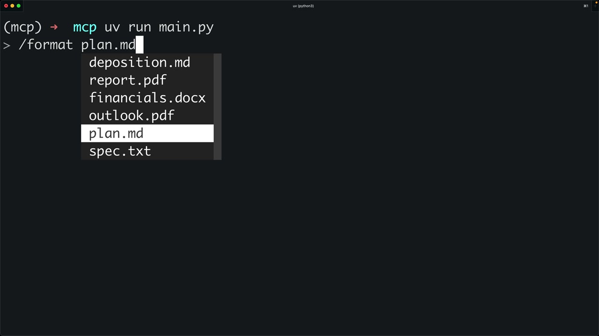
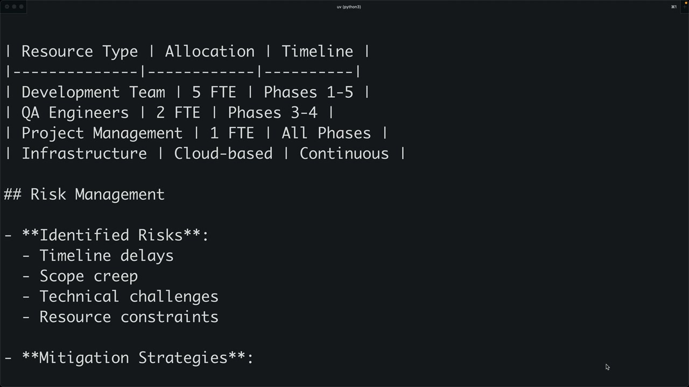

Промпты в клиенте
Чему научитесь
Видео 3:01 и текст урока
К концу урока вы сможете:
- реализовать методы
list_promptsиget_prompt; - передавать аргументы в промпт;
- запускать промпты слэш-командами в CLI.
Видео и текст урока.
Смотреть урок на Skilljar Prompts in the client · 3:01Промпты в MCP задают набор сообщений пользователя и ассистента, которые может использовать клиент. Они должны быть качественными, хорошо протестированными и соответствовать общему назначению MCP-сервера.

format на сервере — переписывает документ в Markdown.Метод list_prompts
Первый шаг — реализовать в MCP-клиенте метод list_prompts. Он получает все доступные промпты с сервера:
async def list_prompts(self) -> list[types.Prompt]:
result = await self.session().list_prompts()
return result.prompts
Простая реализация: вызываем метод сессии list_prompts и возвращаем массив промптов из результата.
Получение отдельного промпта
Метод get_prompt получает конкретный промпт с подставленными аргументами. Аргументы, которые вы передаёте при запросе, уходят в функцию промпта как именованные аргументы:
async def get_prompt(self, prompt_name, args: dict[str, str]):
result = await self.session().get_prompt(prompt_name, args)
return result.messages
Метод возвращает сообщения из результата — разговор, который можно сразу отправить Claude.
Как работают аргументы промпта
Функция промпта на сервере может принимать параметры. Например, промпт форматирования документа ожидает параметр doc_id:
def format_document(doc_id: str):
# The doc_id gets interpolated into the prompt
Когда клиент вызывает get_prompt, в словаре аргументов должны быть ожидаемые ключи. MCP-сервер передаст их функции промпта как именованные аргументы, и в шаблон подставится нужное содержимое.
Проверка промптов в CLI
После реализации промпты можно проверить в интерфейсе командной строки. Когда вы вводите косую черту, доступные промпты появляются как команды. После выбора промпта может понадобиться выбрать значение аргумента (например, ID документа), и затем готовый промпт уходит Claude.

/format plan.md с автодополнением имени документа.Порядок работы:
- пользователь выбирает промпт (например, «format»);
- система спрашивает нужные аргументы (например, какой документ форматировать);
- промпт с подставленными значениями уходит Claude;
- Claude может пользоваться инструментами, чтобы получить нужные данные и выполнить задачу.

Рекомендации по промптам
Создавая промпты для MCP-сервера:
- делайте их соответствующими назначению сервера;
- тщательно тестируйте перед выпуском;
- пишите ясные, конкретные инструкции;
- проектируйте их под доступные инструменты;
- продумайте, какие аргументы придётся указывать пользователям.
Промпты соединяют заранее заданную функциональность с текущими потребностями пользователя: дают Claude структурированную отправную точку для сложных задач и сохраняют гибкость за счёт параметров.
Дальше
Последний урок раздела — обзор: кто управляет инструментами, ресурсами и промптами.
Оригинал урока: Prompts in the client.